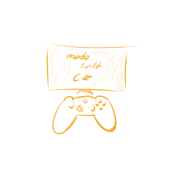
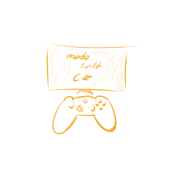
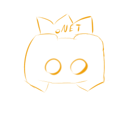
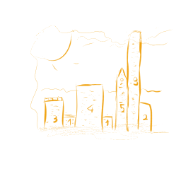

Unity
Z C# można tworzyć skrypty w silniku Unity i tworzyć niesamowite gry wideo. Kliknij dowiedz się więcej by przeczytać o projektach Unity nad którymi pracuje.
 Dowiedz się więcej...Z C# można tworzyć skrypty w silniku Unity i tworzyć niesamowite gry wideo. Kliknij dowiedz się więcej by przeczytać o projektach Unity nad którymi pracuje.
 Dowiedz się więcej...Mój pierwszy projekt w .NET, wykorzystujący bibliotekę Discord.Net. Bot zawiera wiele funkcji, może działać na serwerze w postaci kontenera platformy docker.
 Dowiedz się więcej...Projekt zrobiony w kilka godzin, prosty generator obrazów w postaci aplikacji samodzielnej systemu Windows. Tworzy ilustracje miasta pi, gdzie kolejne wyrazy liczby pi odpowiadają wysokościom budynków. Style budynków są generowane losowo.
 Dowiedz się więcej...Skontaktuj się ze mną, razem zastanowimy się, jak można go zrealizować
 Dowiedz się więcej...
Dowiedz się więcej...